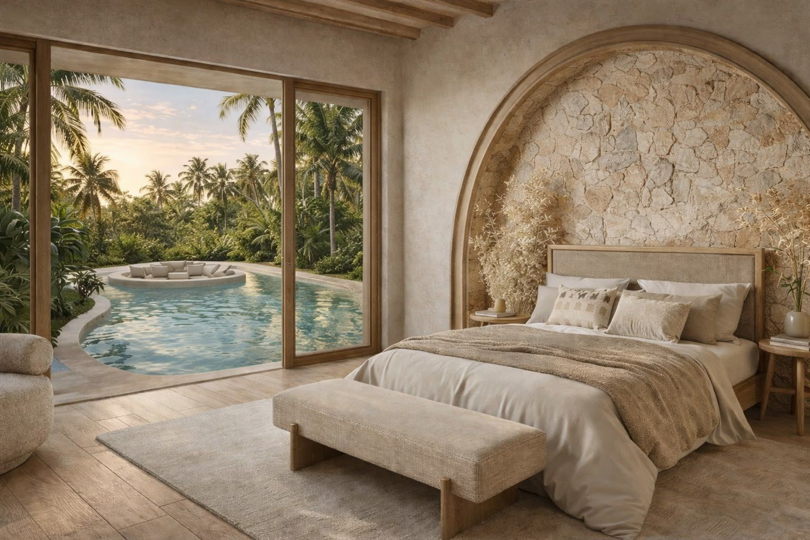
Villa con 1 camera da letto
da165.000 €
- Piscina privata
- Chiavi in mano e arredata
- Accesso alla zona benessere
- Consegna a ottobre 2027
Ne restano 5Richiedi informazioni →
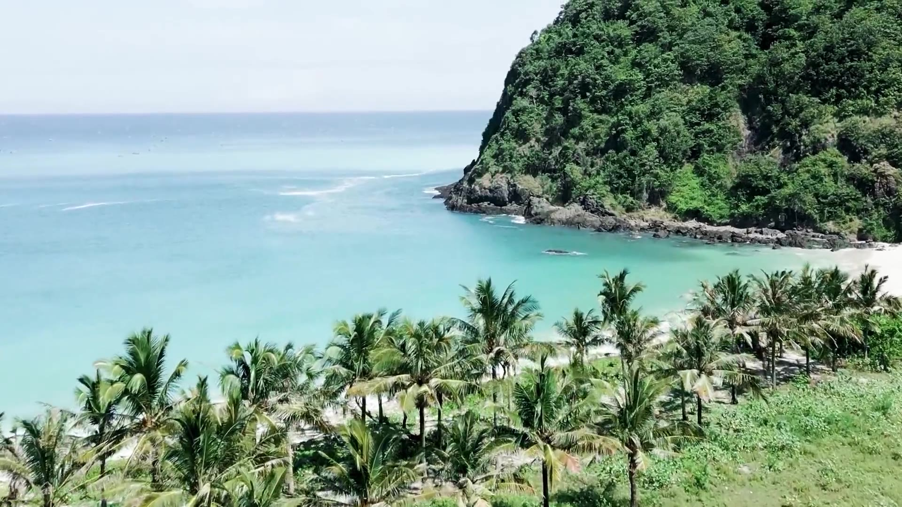
Kuta · Lombok · Indonesia8°53′ S 116°17′ E
Costruiamo, vendiamo e gestiamo ville con piscina privata direttamente dall'isola, dove viviamo da undici anni. Puoi visitarle prima di acquistare.
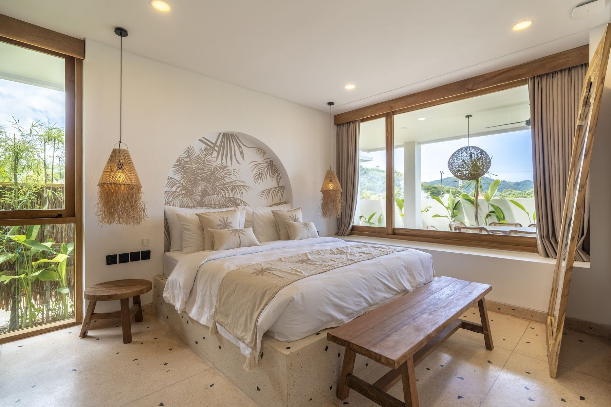
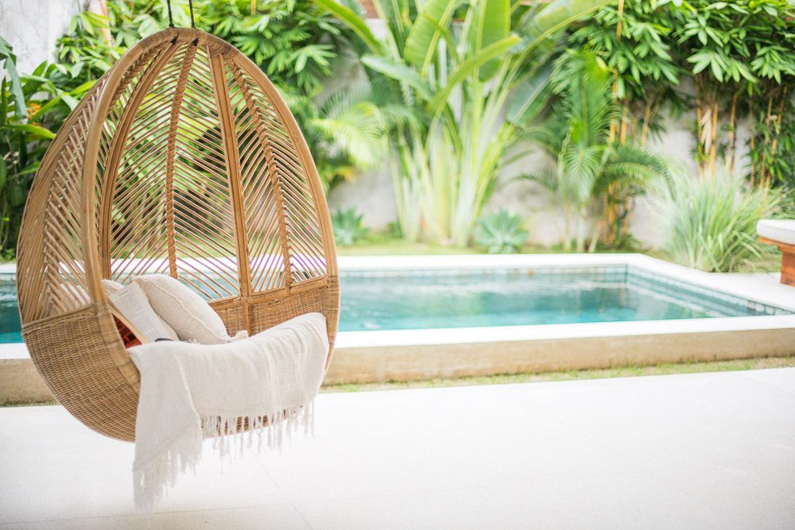
Cerchiamo il terreno, progettiamo la villa, supervisioniamo il cantiere ogni giorno e, quando ti consegniamo le chiavi, la affittiamo e la manteniamo per te. Tutto dal nostro ufficio di Kuta.
Una villa tutta tua con piscina per le tue stagioni sull'isola.
La gestiamo noi tutto l'anno e ti liquidiamo il risultato netto.
Prenoti le date in cui vuoi usarla e per il resto dell'anno viene affittata.
Restano 8 ville disponibili, ciascuna con piscina privata.
Ville mediterranee in pietra, calce e legno, consegnate chiavi in mano e arredate. Le ville con 2 camere da letto vengono consegnate tra marzo e giugno 2027; quelle con 1 camera da letto e quella con vista mare, a ottobre 2027.

da165.000 €
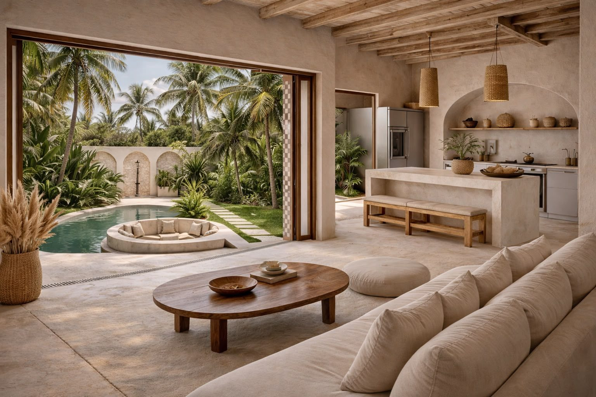
da240.000 €
260.000 €
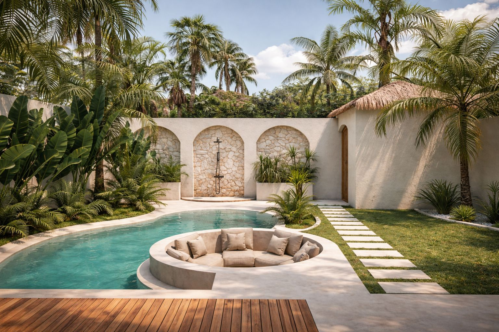
da36.800 €
Le immagini contrassegnate come render riguardano Marlaca IV, attualmente in costruzione. Le altre sono foto di ville Marlaca già consegnate. Prezzi per villa, al netto delle imposte di trasferimento.
Palestra, spa con trattamenti, sala yoga, due saune e vasca di ghiaccio per i proprietari e gli ospiti dei due complessi, inclusa nel prezzo della villa. Più esperienza per l'ospite, una tariffa migliore per te.
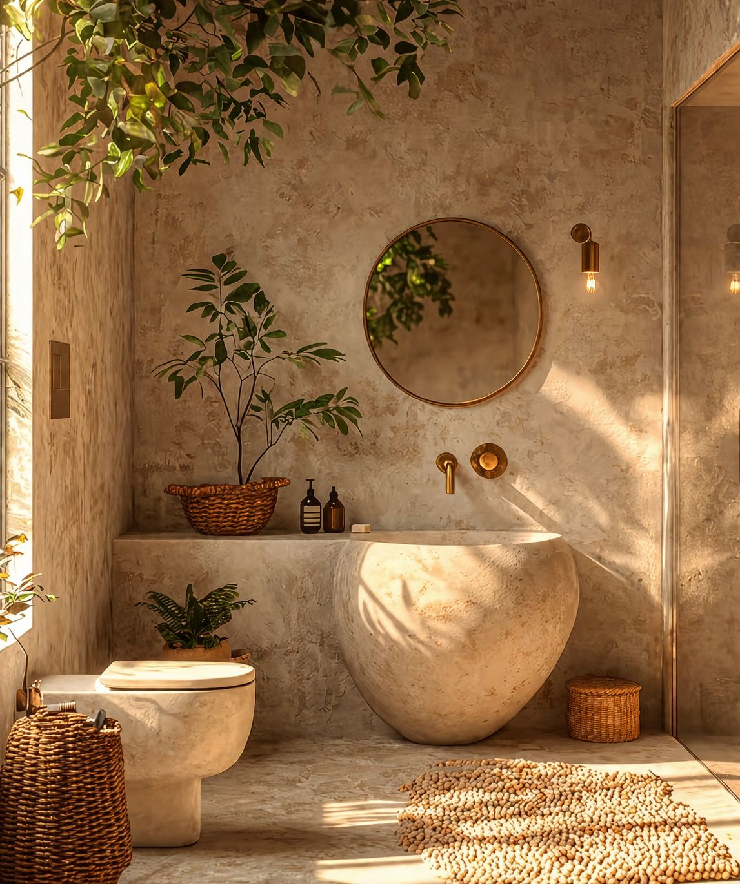
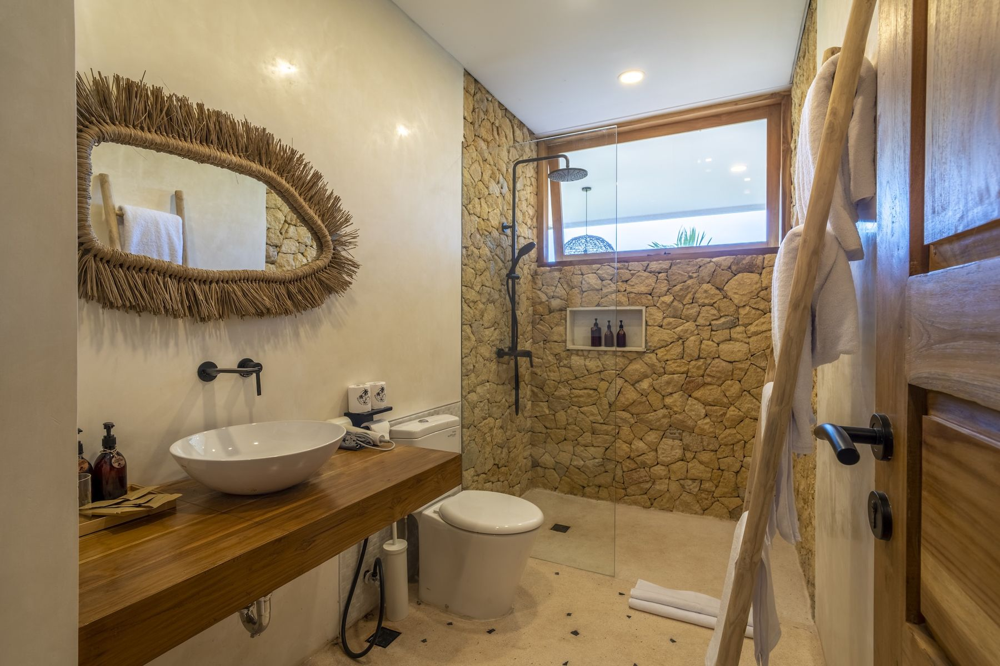
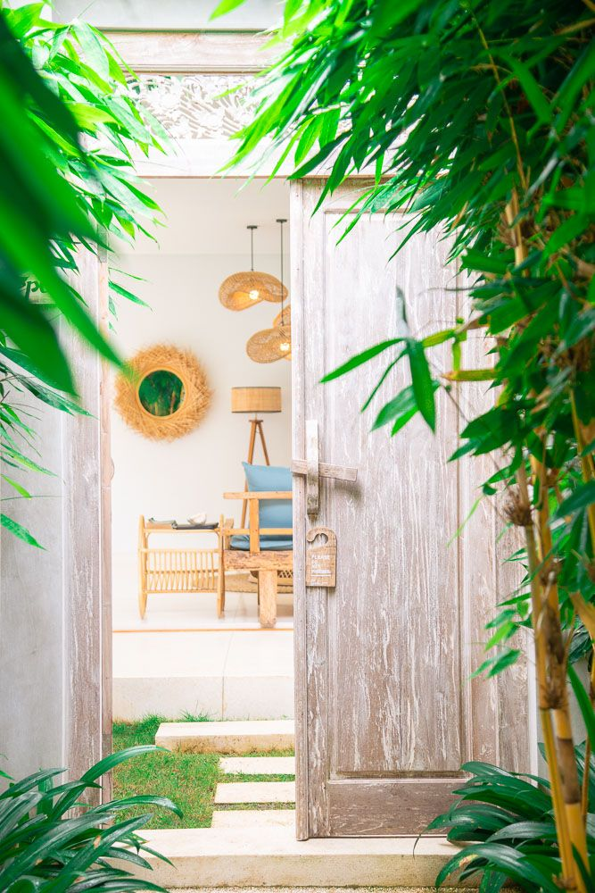
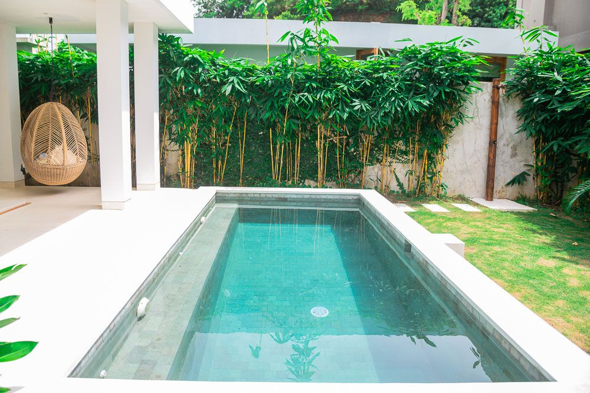
Cinque ville con piscina che si affittano tutto l'anno.
Tre ville a due piani, già in affitto.
Sette ville con piscina e zona benessere condivisa con Marlaca IV. Tutte vendute.
Venti ville. Consegna da marzo 2027.
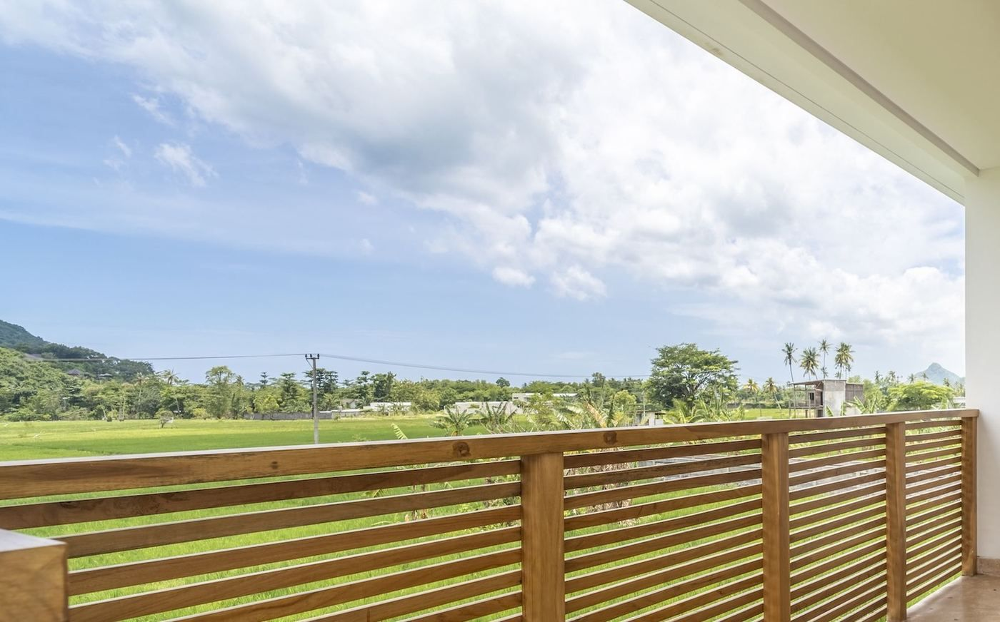
Sei ville a Selong Belanak, da 700.000 €. Ne restano 5.
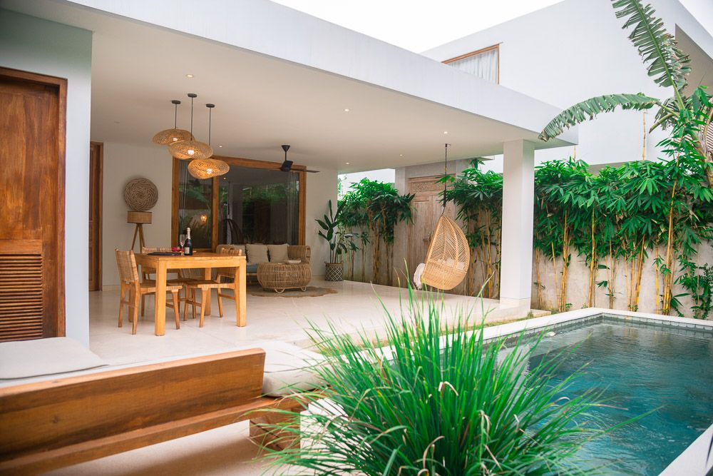
Ecco come è andata una delle nostre ville operative l'anno scorso, a confronto con la media degli affitti vacanza a Lombok.
172 €la tariffa già incassata a dicembre 2025, dopo un aumento del 150% nell'anno senza scendere sotto l'87% di occupazione.
Dati di gestione di Villa Nina da gennaio a dicembre 2025. L'andamento di una villa in un anno non assicura il risultato di un'altra.
Rendimento annuo previsto di una villa con 1 camera da letto di Marlaca IV (165.000 €) nel suo primo anno completo di affitto, il 2027. Scegli uno scenario.
| Ricavo medio per notte | 160 € |
| Tasso di occupazione annuo | 81,7% |
| Alloggio | 47.800 € |
| Colazione e servizi | 11.500 € |
| Fatturato totale annuo della villa | 59.300 € |
| Prezzo della villa | 165.000 € |
| Tempo di rientro | 7,1 anni |
| Netto annuo per te | 23.111 € |
Su ogni 100 € fatturati dalla villa, te ne arrivano tra 35 e 43 a seconda dello scenario. La differenza copre le commissioni delle piattaforme di prenotazione, la gestione quotidiana (pulizie, personale, utenze), la manutenzione e la commissione di gestione di Marlaca.
Nello scenario prudente ricevi 18.159 € l'anno, circa 1.500 € al mese, già al netto di tutti i costi e della gestione.
Villa con 2 camere da letto e vista mare (260.000 €): 10,2% · 12,9% · 16,6% a seconda dello scenario.
Prima dell'imposta sulle società. Non è una garanzia. Sono proiezioni del modello di gestione di Marlaca IV per il 2027. Lo scenario base è il nostro obiettivo; quello prudente è il nostro riferimento per decidere. Ti inviamo il foglio di calcolo completo perché tu possa verificare ogni ipotesi.
Booking, Airbnb e prenotazione diretta su Marlaca Villas, con tariffe che adeguiamo ogni giorno in base alla domanda.
Accoglienza degli ospiti, pulizie, piscina, giardino e manutenzione 24 ore su 24, con personale Marlaca sull'isola.
Occupazione, tariffa media, ricavi e spese della tua villa, spiegati voce per voce.
Ti trasferiamo il risultato netto ogni semestre, a gennaio e a luglio, insieme al report. Se vieni sull'isola, la villa ti aspetta pronta.
Commissione di gestione sul margine operativo lordo (GOP). Il GOP è ciò che resta dei ricavi della villa dopo le commissioni delle piattaforme e i costi di gestione. Nessun costo nascosto.
Ti mostriamo le ville, il cantiere e i numeri. Se sei a Lombok, vieni a vederle.
Scegli la tua villa, ti guidiamo nella costituzione della tua società e firmiamo il contratto di compravendita davanti a un notaio, in spagnolo o in inglese. Tutto il processo si può fare a distanza.
I lavori durano da 12 a 14 mesi, con un'impresa edile locale sotto il nostro controllo quotidiano. Paghi il 40% alla firma, il 40% per stati di avanzamento durante i lavori e il restante 20% almeno due mesi prima del completamento della villa, e ricevi foto di ogni avanzamento.
Ricevi la villa arredata e pronta. Da quel giorno entra in gestione e inizia a essere affittata.
La legge indonesiana non consente a uno straniero di avere la piena proprietà del suolo. Per questo acquisti attraverso una struttura legale riconosciuta, che ti spieghiamo con il nostro notaio prima della firma. Marlaca gestisce la villa con un contratto di gestione: la affitta e ti liquida il netto, ma non è proprietaria della tua villa.
Kuta è la porta della zona economica speciale di Mandalika: circuito di MotoGP, spiagge per il surf, le isole Gili e il vulcano Rinjani, geoparco mondiale UNESCO.
Ha un proprio aeroporto internazionale, con nuove rotte dirette verso l'Asia, e marchi alberghieri internazionali stanno già arrivando sulla costa meridionale.
Spettatori: 102.929 nel 2023, 121.252 nel 2024, 140.324 nel 2025 e 157.875 nel 2026, record storico del circuito. Fonti pubbliche: organizzatore del MotoGP di Mandalika, istituto di statistica indonesiano (BPS) e compagnie aeree, raccolte a ottobre 2026.
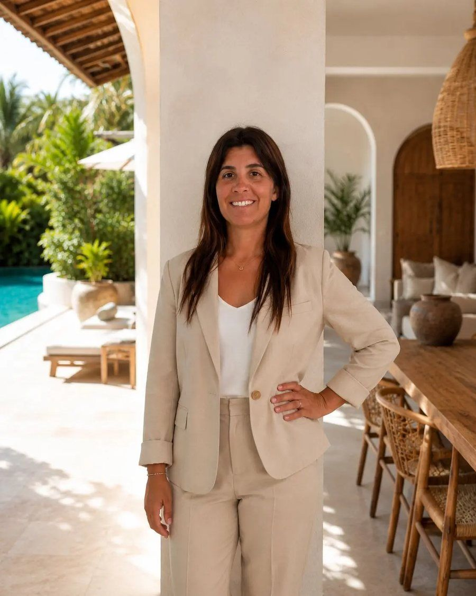
È arrivata a Lombok nel 2015, più di undici anni fa. Oggi guida un team interno di 21 persone che progetta le ville, supervisiona il cantiere e le gestisce. E Marlaca mantiene ville di proprietà nei suoi sviluppi.
Conosciamo le persone, i terreni e i tempi di Lombok.
Dati reali delle ville che già affittiamo.
Ufficio e team a Kuta. Non è un business di passaggio.
Un'impresa locale, con il controllo quotidiano del nostro team.
Marlaca mantiene ville di proprietà nei suoi sviluppi.
Partiamo sempre dallo scenario prudente.
Se sei a Lombok, ti mostriamo le ville operative e i cantieri di Marlaca III e IV. Altrimenti lo facciamo in videochiamata, in diretta dall'isola.
Organizza una visita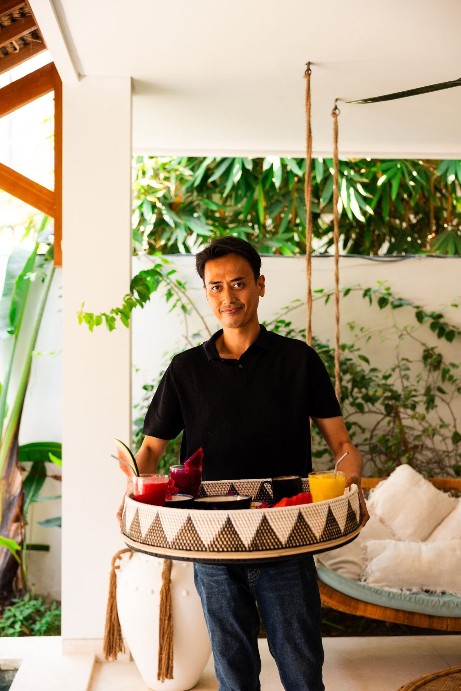
Video dei cantieri di Marlaca III e Marlaca IV (settembre 2026) e foto del team.
Acquisti attraverso una società PT PMA titolare di un diritto HGB sul terreno, che consente di costruire e usare la proprietà per periodi rinnovabili. Non è la piena proprietà del suolo, che la legge indonesiana riserva ai propri cittadini. Te lo spieghiamo con il nostro notaio prima della firma.
No. Lavoriamo con tre scenari (11%, 14% e 18% annuo, prima dell'imposta sulle società) e ti mostriamo le ipotesi di ciascuno. Quello che abbiamo, invece, sono risultati reali di ville operative, come Villa Nina nel 2025.
Sì. Se sei a Lombok, ti mostriamo le ville operative e il cantiere in corso. Altrimenti facciamo la visita in videochiamata.
Sì. Prenoti le date che vuoi e per il resto dell'anno la villa viene affittata. Più notti la usi, minore sarà il risultato dell'affitto.
Il 20% del margine operativo lordo (GOP): ciò che resta dei ricavi dopo le commissioni delle piattaforme e i costi di gestione.
Il 40% alla firma del contratto di compravendita, il 40% per stati di avanzamento durante i lavori e il restante 20% almeno due mesi prima del completamento della villa. La partecipazione si prenota con 5.000 € e, firmato il Partnership Agreement, si versa il saldo. Ti inviamo il calendario dei pagamenti insieme al contratto.
Puoi entrare con una partecipazione da 36.800 €: il 4% della società proprietaria di quattro ville con 2 camere da letto di Marlaca IV, con una prenotazione di 5.000 € e il saldo dopo la firma del Partnership Agreement, e incassi la tua parte dell'utile netto con una distribuzione semestrale. Include il diritto di utilizzo proporzionale. Nessun rendimento fisso garantito.
Una videochiamata di 30 minuti con il team commerciale, nell'orario che preferisci. Senza impegno.
Rispondi a tre domande con un clic e fissiamo una videochiamata di 30 minuti, nell'orario che preferisci.
Se l'investimento non fa per te, te lo diciamo durante la chiamata.